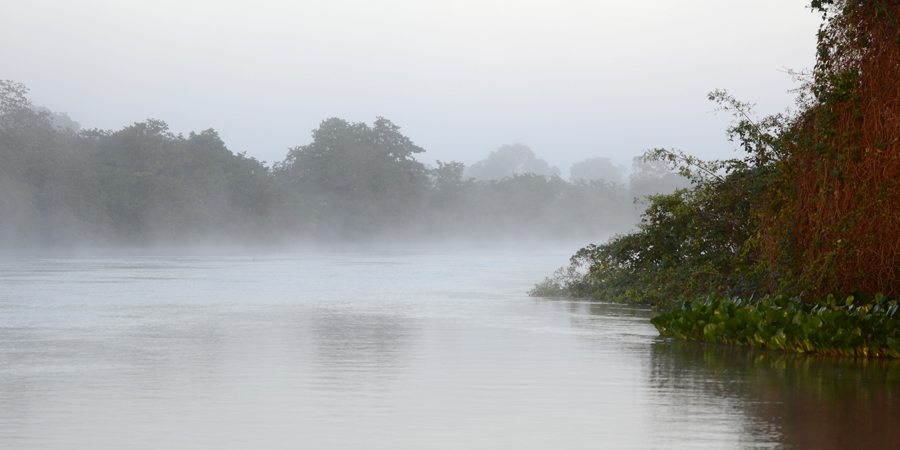
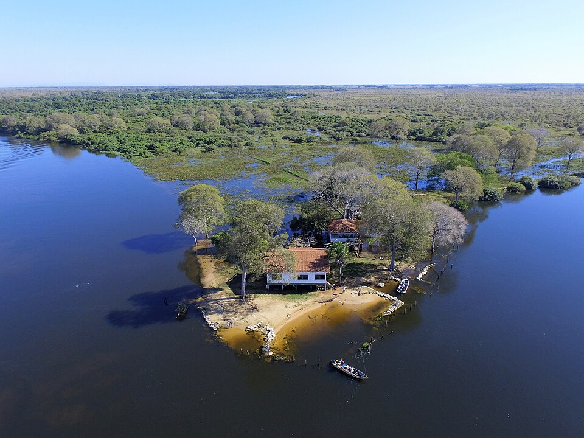
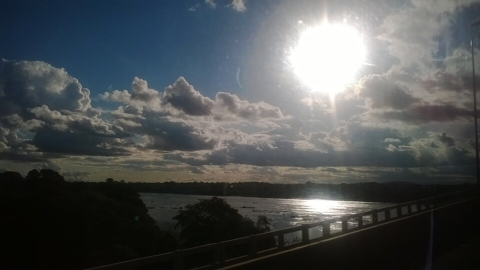
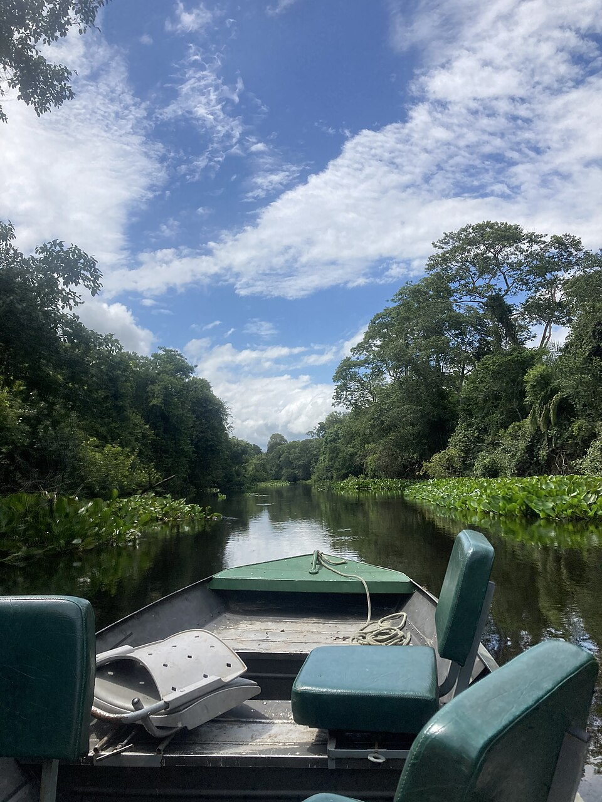
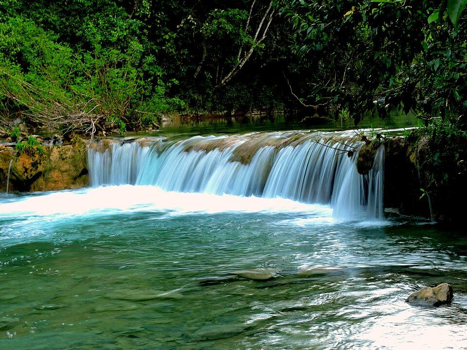
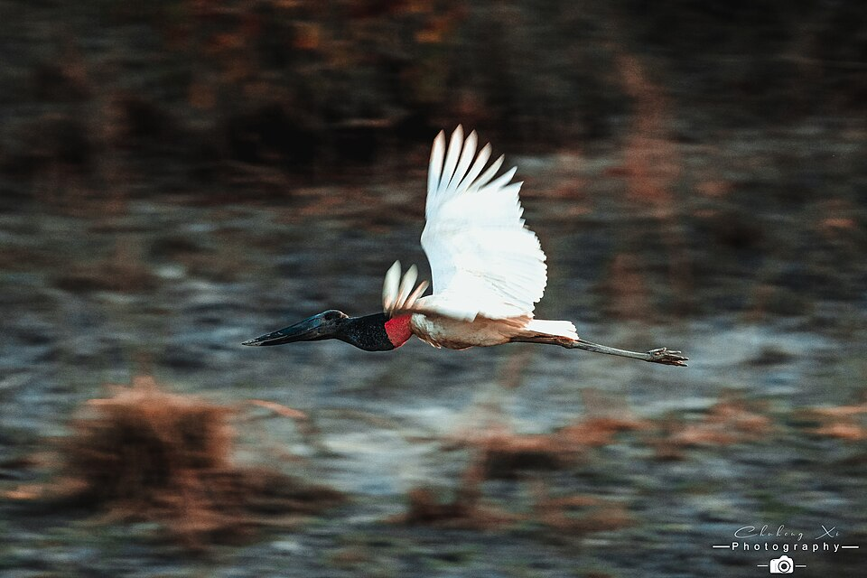
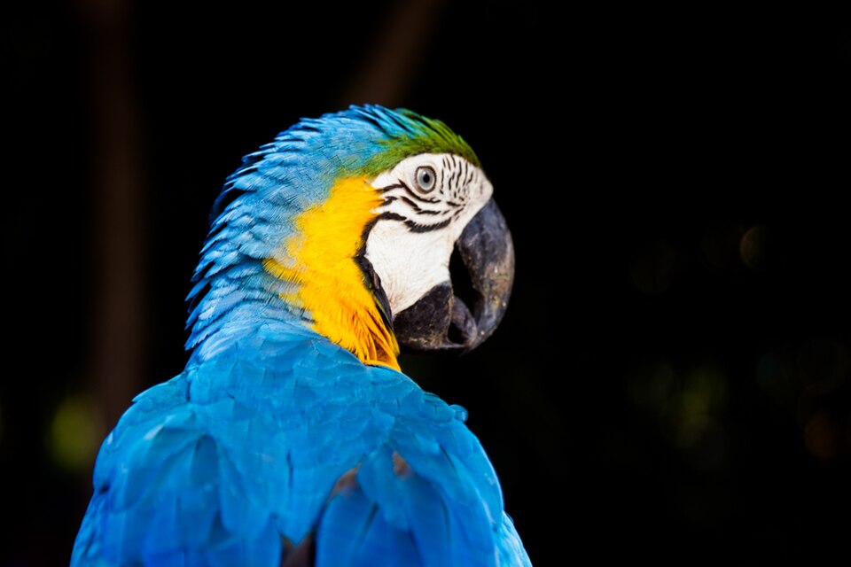
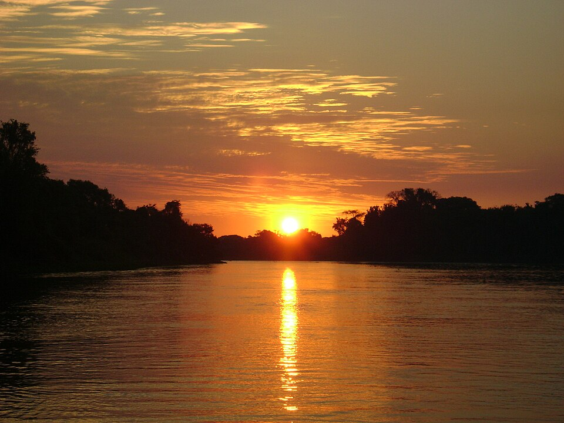

HOSPEDAGEM & LAZER Foto: Geoff Gallice (CC BY 2.0)Pousadas & Hotéis de Pesca no Rio Miranda
Estrutura com pensão completa, apartamentos climatizados, barcos com motor 4 tempos e piloteiros nativos conhecedores dos melhores poços.
Conecte-se diretamente com pescadores e piloteiros nativos das Colônias Z-1, Z-7 e Z-11 pelo WhatsApp. O turista encontra no mapa; você combina tudo direto com o profissional, sem taxas nem intermediação.
Conecte-se com pousadas pesqueiras, barcos-hotéis e comércios náuticos credenciados ao longo do Rio Miranda, Passo do Lontra e Aquidauana.

HOSPEDAGEM & LAZER Foto: Geoff Gallice (CC BY 2.0)Estrutura com pensão completa, apartamentos climatizados, barcos com motor 4 tempos e piloteiros nativos conhecedores dos melhores poços.

EXPEDIÇÕES FLUVIAIS Foto: Luiz Bernhard (CC BY-SA 4.0)Viva o Pantanal profundo a bordo de chalanas e barcos-hotéis confortáveis com navegação contínua, safári fotográfico e pacotes all-inclusive.

APOIO NÁUTICO Foto: Kaliewhite (CC BY-SA 4.0)Tuviras selecionadas, caranguejos, tralhas de pesca, combustível náutico e contratação de guias credenciados pelas Colônias Z-1, Z-7 e Z-11.
Tudo o que você precisa para planejar sua pescaria, navegar com segurança e vivenciar o Pantanal com responsabilidade ambiental.

PESCA ESPORTIVA Foto: Rezendevaleria (CC BY-SA 4.0)Descubra os pontos de rodada de pintado no canal principal, batida de pacu nas margens e trechos exclusivos de Pesque e Solte no Rio Miranda e Rio Aquidauana.
Localizar Trechos no MapaConsulte a faixa permitida de cada espécie para evitar autuação da PMA: Pintado (85 a 125 cm), Pacu (45 a 65 cm), Jaú (95 a 130 cm). Dourado é 100% Pesque e Solte!
Descidas de concreto homologadas, postos com gasolina náutica e atracadouros estratégicos em Miranda, Passo do Lontra e Anastácio.
Ver Rampas no WebGIS
SANTUÁRIO ECOLÓGICO Foto: Wilmar Carrilho (CC BY-SA 4.0)Águas transparentes de calcário protegidas por lei estadual. Na calha do Salobra, a pesca é estritamente Pesque e Solte, proibido abate ou transporte, com autorização apenas para motores 4 tempos até 15 HP.
Acesso rápido aos telefones de socorro: Marinha do Brasil (185), Polícia Militar Ambiental (190), Bombeiros (193) e pronto atendimento de Miranda.
Visualize todas as camadas geográficas integradas: limites municipais, reservas ecológicas, piloteiros credenciados e áreas de restrição na palma da sua mão.



A Bacia Hidrográfica do Rio Miranda abrange 44.740 km² de área de drenagem (cerca de 12% de todo o território sul-mato-grossense) e integra 23 municípios onde vive mais de 54% da população do estado. Suas nascentes brotam nos planaltos da Serra de Maracaju e nas escarpas da Serra da Bodoquena, percorrendo 490 km de curso principal até desaguar na margem esquerda do Rio Paraguai, no Pantanal de Corumbá.
Ao longo do seu percurso, o Miranda recebe tributários fundamentais como o Rio Aquidauana, o límpido Rio Salobra e o Rio Vermelho. Essa dinâmica fluvial sustenta um dos ecossistemas de peixes migradores mais produtivos do planeta — como o Pintado, o Pacu, o Jaú, a Cachara e o emblemático Dourado — sob forte regramento ambiental de preservação.
Mais do que uma bacia hidrográfica, este território é o lar de comunidades ribeirinhas históricas. Os piloteiros e pescadores nativos das Colônias Z-1 (Miranda e Corumbá), Z-7 (Aquidauana e Anastácio) e Z-11 (Bonito e Águas do Miranda) detêm o conhecimento tradicional da navegação, conduzindo com segurança os visitantes por canais, baías e restingas pantaneiras.
Consulte camadas oficiais em SIRGAS 2000: limites municipais, traçado detalhado da hidrografia, postos de fiscalização da PMA e atracadouros georreferenciados.
Artigos, relatos de campo e conhecimento prático sobre os rios, a fauna e a vida pantaneira.
Expedições técnicas (Brasil das Águas e WWF) revelam o relevo da bacia: pedrais e restingas no alto curso (Jardim, Bonito e Aquidauana) exigem embarcações leves com calado raso. De Miranda até a foz no Rio Paraguai, a calha se alarga permitindo voadeiras e chalanas.
Consultar no WebGIS →Em Bonito, rios cristalinos de flutuação (Formoso, Sucuri, Prata) têm pesca 100% proibida por lei. O Distrito Águas do Miranda é o único polo oficial do município para a pesca esportiva, operando com pousadas e pesque-e-solte na calha do Miranda.
Conhecer o polo →O saber secular dos pescadores profissionais de Miranda (Colônia Z-1), Aquidauana (Colônia Z-7) e Bonito (Colônia Z-11) na leitura dos balseiros, corixos e poços profundos onde habitam as grandes matrizes de pintado, pacu e jaú no Pantanal.
Contatar piloteiros →Reconhecido no cenário nacional (Pesca Trade Show / FUNDTUR-MS), Mato Grosso do Sul lidera a pesca responsável no Brasil. A proteção permanente do Dourado e o estímulo ao Pesque e Solte asseguram fauna farta e economia sustentável.
Ver calendário e regras →A pesca nestes rios é CRIME AMBIENTAL com detenção de 1 a 3 anos e apreensão do barco e motor:
A captura de iscas vivas só pode ser realizada por pescadores profissionais habilitados. No período de defeso da piracema, a captura de iscas só é permitida a partir de 20 de fevereiro. A captura desrespeitando essas medidas é crime punível com prisão de até 3 anos.
| Espécie de Isca | Nome Científico | Medida Mínima Permitida |
|---|---|---|
| Tuvira (Bacia do Rio Paraguai) | Gymnotus inaequilabiatus / paraguaiensis | 17 cm |
| Tuvira (Bacia do Rio Paraná) | Gymnotus carapo | 20 cm |
| Mussum | Synbranchus marmoratus | 20 cm |
| Pirambóia | Lepidosiren paradoxa | 20 cm |
| Chimboré / Timboré / Taguara | Schizodon spp | 15 cm |
| Cambota / Camboatá | Callichthys callichthys | 13 cm |
| Jejum / Jeju | Hoplerythrinus unitaeniatus | 10 cm |
| Lambari | Astyanax spp | 5 cm |
| Caramujo | Pomacea spp | 4 cm |
| Caranguejo | Dilocarcinus pagel | 3 cm |
O transporte é permitido EXCLUSIVAMENTE dentro do território de Mato Grosso do Sul (sendo estritamente proibido o transporte interestadual ou internacional). O pescador licenciado deve se dirigir a qualquer Quartel, Pelotão ou Posto da Polícia Militar Ambiental (PMA) em MS para vistoriar, colocar o lacre plástico numerado e declarar seu pescado, onde receberá gratuitamente a Guia de Controle de Pescado (GCP) (o IMASUL emite apenas a carteira de pesca; não existe taxa ou selo turismo).
⚠️ A falta da Guia (GCP) ou do lacre da PMA implica em autuação por crime ambiental, multa e apreensão de veículos e materiais!
O pescado NÃO PODE estar com as características descaracterizadas:
Nos frigoríficos, pousadas, peixarias, hotéis e restaurantes, os estoques de pescado in natura ou congelados devem ser declarados ao IMASUL em até 48 horas após o início da piracema. A falta de declaração, mesmo com nota fiscal, acarreta apreensão de todo o estoque e multa pesada.
A utilização destes métodos constitui CRIME AMBIENTAL (Lei Federal nº 9.605/98), sujeito a detenção, multa e apreensão imediata de embarcação, motor e petrechos:
Ao pescador amador/desportista licenciado é permitido exclusivamente o uso de:
Toque no botão para ligar diretamente em caso de dúvidas, denúncias ou emergências na calha do rio:
Muitos pescadores têm medo de transportar pescado por desinformação. No MS, o transporte rodoviário em veículo particular é permitido por lei EXCLUSIVAMENTE DENTRO DO ESTADO (terminantemente proibido o transporte interestadual ou para o exterior), desde que você siga rigorosamente estes 4 passos:
Você pode transportar 1 (um) exemplar nativo dentro da faixa legal (ex: Pintado de 85 a 125 cm ou Pacu de 45 a 65 cm) + até 5 piranhas. Espécies exóticas (tucunaré, corvina) são livres. Dourado é 100% Pesque e Solte até 2029.
O peixe deve viajar INTEIRO no gelo (com cabeça, cauda, escamas ou couro e vísceras). É expressamente proibido transportar em filés ou postas na estrada para permitir a conferência oficial pela PMA.
Emita previamente sua Autorização Ambiental para Pesca Amadora no portal de serviços do IMASUL (salve o PDF no celular e tenha uma cópia impressa). O IMASUL emite apenas a carteira de pesca — não existe selo turismo no Estado.
Antes de seguir viagem, pare em qualquer Batalhão, Pelotão ou Posto da Polícia Militar Ambiental (PMA) do Estado de MS — como o Pelotão de Miranda (km 565 da BR-262), Pelotão de Aquidauana, Corumbá, Bonito ou Campo Grande. A PMA afere a régua oficial, coloca o lacre plástico numerado e emite a Guia de Controle de Pescado (GCP) gratuitamente. Com o peixe lacrado e a GCP, sua viagem dentro do Estado está 100% legalizada!
Espaço dedicado para operadoras de ecoturismo, receptivos e organizadores de pacotes conectarem suas expedições diretamente aos milhares de pescadores e turistas que acessam o portal para planejar sua viagem no Pantanal. Negociação direta, personalizada e sem taxas de comissão!
Transfers e vans saindo de Campo Grande, Bonito e Corumbá até as pousadas.
Roteiros fluviais para grupos, contemplação da fauna e safári fotográfico pantaneiro.
Divulgação de grupos completos com hospedagem, barcos, guias e iscas inclusas.
O turista clica e fala direto com a central de reservas da sua agência no WhatsApp.
A água começa a sair dos campos e volta para os rios. Água límpida descendo da Serra da Bodoquena. Época fantástica para pesca de batida de Pacu com tucum nas margens, Dourado no corrico e Pintado na rodada.
Rios totalmente na calha com praias de areia expostas. Os peixes se concentram nos poços e canais. Clima agradável com noites frescas. Máxima produtividade para todas as espécies pantaneiras (Pintado, Jaú, Cachara, Pacu e Curimbatá).
PESCA PROIBIDA em toda a bacia por lei estadual para reprodução dos peixes. Não viaje para pescar neste período. Fiscalização intensiva com barreira 24h na BR-262 e apreensão de veículos e barcos.
Abertura antecipada da modalidade Pesque e Solte na calha principal dos rios navegáveis de MS autorizados pelo IMASUL. Proibido abater qualquer exemplar. Excelente para aquecer as tralhas antes da temporada aberta.
De Campo Grande a Miranda: 200 km pela BR-262 (pista asfaltada). Passa por Terenos e Aquidauana. Atenção a animais silvestres na pista à noite.
De Miranda a Passo do Lontra: Siga pela BR-262 até o trevo do Buraco das Piranhas e entre na MS-184 (Estrada Parque Pantanal). Trecho de terra cascalhada com pontes de madeira (trafegável para carros de passeio na seca; na época de cheia, consulte sua pousada).
Onde Abastecer: A cidade de Miranda é o seu último grande ponto urbano com postos 24h, supermercados, distribuidoras de gelo e farmácias antes de entrar no Pantanal profundo.
No meio dos corixos do Rio Miranda nenhuma operadora de celular pega. Toque no botão abaixo enquanto estiver no Wi-Fi do hotel ou na cidade de Miranda para carregar o mapa, as réguas de peixes e os telefones de emergência na memória do seu aparelho.
Orientações essenciais para a prática legal e sustentável da pesca esportiva e amadora na calha do Rio Miranda e afluentes.
Infraestrutura portuária, segurança da navegação e diretório de serviços credenciados ao longo da bacia.
Infraestrutura verificada e condutores das Colônias Z-1 (Miranda), Z-7 (Aquidauana) e Z-11 (Bonito) para uma pescaria segura no Pantanal.
Garanta presença no ponto mais nobre do portal com fotos da sua estrutura, rampa de descida de barcos, amenidades e botão direto para o seu WhatsApp pessoal. Sem comissões de plataformas!
Rampa de concreto de apoio para barcos e lanchas, aluguel de voadeiras 40hp, apartamentos climatizados, restaurante típico e piloteiros pantaneiros nativos.
Localização estratégica na foz do Rio Vermelho com o Rio Miranda. Píer flutuante, posto de combustível náutico, venda de tuvira e barcos de borda alta com coletes da Capitania.
Navegadores ribeirinhos tradicionais da Bacia do Rio Miranda. Conhecimento dos canais, poços de pintado, pesca de rodada e condução segura nos balseiros pantaneiros. Espaço comunitário aberto e gratuito para os guias da Colônia Z-1.
Condutores ribeirinhos com vasta experiência nas corredeiras e restingas do Rio Aquidauana. Prática de pesca esportiva responsável, condução segura e respeito aos ciclos do Pantanal. Cadastro 100% gratuito.
Condutores ribeirinhos e pescadores profissionais da Colônia Z-11 atuantes em Águas do Miranda e região de Bonito. Conhecimento ímpar das águas cênicas do Rio Miranda e afluentes, preservação ecológica e turismo sustentável. Cadastro 100% gratuito.
Este portal é uma iniciativa cidadã sem verba pública. Ao divulgar sua pousada, rancho ou loja de pesca aqui, você conecta seu negócio diretamente ao pescador esportivo e ajuda a manter a plataforma gratuita para os piloteiros nativos.